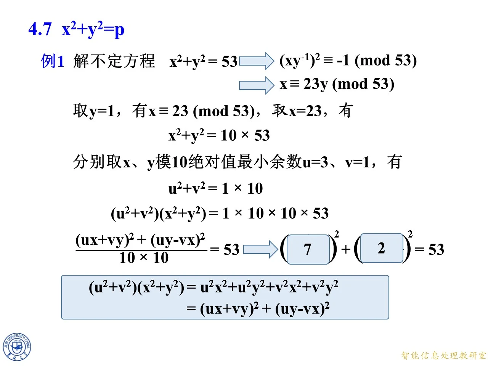
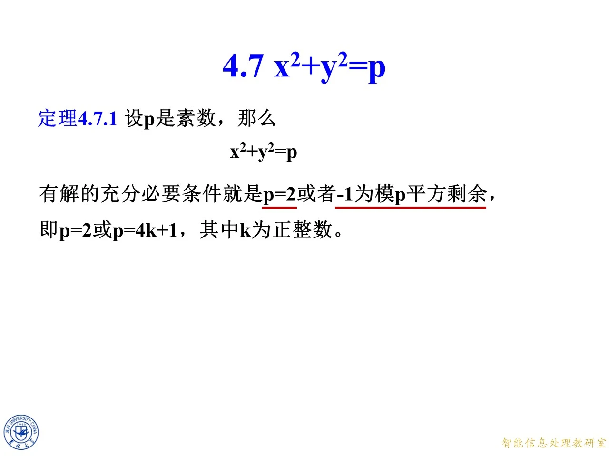

本主题回答一个经典问题：素数 p 什么时候能写成两个正整数的平方之和。结论是 p=2 或者 p 呈 4k+1 的形状，而具体构造靠下降法完成——先求模平方根，把原方程变成一个带倍数 m 的方程，再反复使用一个平方和恒等式把倍数压到 1。本节是第四章的最后一节，紧接 4.6 模平方根之后，相当于把前几节的同余工具汇总成一次完整应用。
4.7.1 素数平方和的可解条件
◆ p.424 ｜定理 4.7.1
课件原页只给出定理陈述，没有证明：
定理 4.7.1 设 p 是素数，那么 x 2 + y 2 = p x^2+y^2=p x 2 + y 2 = p p = 2 p=2 p = 2 − 1 -1 − 1 p p p p = 2 p=2 p = 2 p = 4 k + 1 p=4k+1 p = 4 k + 1 k k k
读这个定理要抓住三点。第一，方程 x 2 + y 2 = p x^2+y^2=p x 2 + y 2 = p p = 2 p=2 p = 2 1 2 + 1 2 = 2 1^2+1^2=2 1 2 + 1 2 = 2 − 1 -1 − 1 p p p x 2 ≡ − 1 ( m o d p ) x^2\equiv-1\pmod p x 2 ≡ − 1 ( mod p ) p = 2 p=2 p = 2 p = 4 k + 1 p=4k+1 p = 4 k + 1 p = 2 p=2 p = 2 p ≡ 1 ( m o d 4 ) p\equiv1\pmod4 p ≡ 1 ( mod 4 ) 5 , 13 , 17 , 29 , 37 , 41 , 53 , … 5,13,17,29,37,41,53,\ldots 5 , 13 , 17 , 29 , 37 , 41 , 53 , … 3 , 7 , 11 , 19 , 23 3,7,11,19,23 3 , 7 , 11 , 19 , 23 4 k + 3 4k+3 4 k + 3
p p p 形状
x 2 + y 2 = p x^2+y^2=p x 2 + y 2 = p
2 2 2 p = 2 p=2 p = 2 1 2 + 1 2 1^2+1^2 1 2 + 1 2
5 5 5 4 ⋅ 1 + 1 4\cdot1+1 4 ⋅ 1 + 1 1 2 + 2 2 1^2+2^2 1 2 + 2 2
13 13 13 4 ⋅ 3 + 1 4\cdot3+1 4 ⋅ 3 + 1 2 2 + 3 2 2^2+3^2 2 2 + 3 2
29 29 29 4 ⋅ 7 + 1 4\cdot7+1 4 ⋅ 7 + 1 2 2 + 5 2 2^2+5^2 2 2 + 5 2
41 41 41 4 ⋅ 10 + 1 4\cdot10+1 4 ⋅ 10 + 1 4 2 + 5 2 4^2+5^2 4 2 + 5 2
53 53 53 4 ⋅ 13 + 1 4\cdot13+1 4 ⋅ 13 + 1 2 2 + 7 2 2^2+7^2 2 2 + 7 2
797 797 797 4 ⋅ 199 + 1 4\cdot199+1 4 ⋅ 199 + 1 11 2 + 26 2 11^2+26^2 1 1 2 + 2 6 2
3 3 3 4 ⋅ 0 + 3 4\cdot0+3 4 ⋅ 0 + 3 无解
7 7 7 4 ⋅ 1 + 3 4\cdot1+3 4 ⋅ 1 + 3 无解
11 11 11 4 ⋅ 2 + 3 4\cdot2+3 4 ⋅ 2 + 3 无解
表中每个平方和都可用心算复核，例如 2 2 + 7 2 = 4 + 49 = 53 2^2+7^2=4+49=53 2 2 + 7 2 = 4 + 49 = 53 11 2 + 26 2 = 121 + 676 = 797 11^2+26^2=121+676=797 1 1 2 + 2 6 2 = 121 + 676 = 797
拓展 （课件外补充）：课件只写结论，两个方向的依据在此补全。必要性：若奇素数 p = x 2 + y 2 p=x^2+y^2 p = x 2 + y 2 x , y x,y x , y p ≡ 1 ( m o d 4 ) p\equiv1\pmod4 p ≡ 1 ( mod 4 ) − 1 -1 − 1 p p p p ≡ 1 ( m o d 4 ) p\equiv1\pmod4 p ≡ 1 ( mod 4 ) p p p ( − 1 ) ( p − 1 ) / 2 ≡ 1 ( m o d p ) (-1)^{(p-1)/2}\equiv1\pmod p ( − 1 ) ( p − 1 ) /2 ≡ 1 ( mod p ) ( p − 1 ) / 2 (p-1)/2 ( p − 1 ) /2 p = 2 p=2 p = 2 − 1 ≡ 1 = 1 2 ( m o d 2 ) -1\equiv1=1^2\pmod2 − 1 ≡ 1 = 1 2 ( mod 2 ) p = a 2 + b 2 p=a^2+b^2 p = a 2 + b 2 p p p Z [ i ] \mathbb{Z}[i] Z [ i ] ( a + b i ) ( a − b i ) (a+bi)(a-bi) ( a + bi ) ( a − bi ) p ≡ 1 ( m o d 4 ) p\equiv1\pmod4 p ≡ 1 ( mod 4 ) p p p
4.7.2 下降法及证明
◆ p.425-426 ｜下降法算法流程图（p.426 为过渡页）
流程图标题是"求解正整数 x、y 满足方程 x 2 + y 2 = p x^2+y^2=p x 2 + y 2 = p
判断框：p = 2 p=2 p = 2 p = 4 k + 1 p=4k+1 p = 4 k + 1
解 x 2 ≡ − 1 ( m o d p ) x^2\equiv-1\pmod p x 2 ≡ − 1 ( mod p ) x 0 x_0 x 0 − 1 -1 − 1
令 i = 0 i=0 i = 0 y 0 = 1 y_0=1 y 0 = 1
解 x i 2 + y i 2 = m i p x_i^2+y_i^2=m_ip x i 2 + y i 2 = m i p m i m_i m i m i = x i 2 + y i 2 p m_i=\frac{x_i^2+y_i^2}{p} m i = p x i 2 + y i 2 p ∣ x 0 2 + 1 p\mid x_0^2+1 p ∣ x 0 2 + 1
判断框：m i = 1 m_i=1 m i = 1 x = ∣ x i ∣ x=|x_i| x = ∣ x i ∣ y = ∣ y i ∣ y=|y_i| y = ∣ y i ∣
分别取 x i x_i x i y i y_i y i m i m_i m i u i u_i u i v i v_i v i x i + 1 = u i x i + v i y i m i , y i + 1 = u i y i − v i x i m i ,
x_{i+1}=\frac{u_ix_i+v_iy_i}{m_i},\qquad y_{i+1}=\frac{u_iy_i-v_ix_i}{m_i},
x i + 1 = m i u i x i + v i y i , y i + 1 = m i u i y i − v i x i , i ← i + 1 i\leftarrow i+1 i ← i + 1
"绝对值最小余数"指模 m m m ± r \pm r ± r ∣ u i ∣ , ∣ v i ∣ ≤ m / 2 |u_i|,|v_i|\le m/2 ∣ u i ∣ , ∣ v i ∣ ≤ m /2 − 7 -7 − 7
拓展 （课件外补充）：课件只给流程图未给证明，这里补全"分母为何除得尽、倍数为何一定变小、算法为何一定停"。设当前 x 2 + y 2 = m p x^2+y^2=mp x 2 + y 2 = m p 1 < m < p 1<m<p 1 < m < p m = x 0 2 + 1 p m=\frac{x_0^2+1}{p} m = p x 0 2 + 1 1 ≤ x 0 ≤ p − 1 1\le x_0\le p-1 1 ≤ x 0 ≤ p − 1 x 0 2 + 1 < p 2 x_0^2+1<p^2 x 0 2 + 1 < p 2 m < p m<p m < p m = 1 m=1 m = 1 u ≡ x ( m o d m ) u\equiv x\pmod m u ≡ x ( mod m ) v ≡ y ( m o d m ) v\equiv y\pmod m v ≡ y ( mod m ) ∣ u ∣ , ∣ v ∣ ≤ m / 2 |u|,|v|\le m/2 ∣ u ∣ , ∣ v ∣ ≤ m /2
分母除得尽：u 2 + v 2 ≡ x 2 + y 2 ≡ 0 ( m o d m ) u^2+v^2\equiv x^2+y^2\equiv0\pmod m u 2 + v 2 ≡ x 2 + y 2 ≡ 0 ( mod m ) m ∣ u 2 + v 2 m\mid u^2+v^2 m ∣ u 2 + v 2 u x + v y ≡ x 2 + y 2 ≡ 0 ( m o d m ) ux+vy\equiv x^2+y^2\equiv0\pmod m ux + v y ≡ x 2 + y 2 ≡ 0 ( mod m ) u y − v x ≡ x y − y x ≡ 0 ( m o d m ) uy-vx\equiv xy-yx\equiv0\pmod m u y − vx ≡ x y − y x ≡ 0 ( mod m ) m m m m ′ = u 2 + v 2 m m'=\frac{u^2+v^2}{m} m ′ = m u 2 + v 2 x ′ = u x + v y m x'=\frac{ux+vy}{m} x ′ = m ux + v y y ′ = u y − v x m y'=\frac{uy-vx}{m} y ′ = m u y − vx
倍数真的变小：由 ∣ u ∣ , ∣ v ∣ ≤ m / 2 |u|,|v|\le m/2 ∣ u ∣ , ∣ v ∣ ≤ m /2 u 2 + v 2 ≤ m 2 2 u^2+v^2\le\frac{m^2}{2} u 2 + v 2 ≤ 2 m 2 m ′ ≤ m 2 m'\le\frac m2 m ′ ≤ 2 m u = v = 0 u=v=0 u = v = 0 m ∣ x m\mid x m ∣ x m ∣ y m\mid y m ∣ y m 2 ∣ x 2 + y 2 = m p m^2\mid x^2+y^2=mp m 2 ∣ x 2 + y 2 = m p m ∣ p m\mid p m ∣ p 1 < m < p 1<m<p 1 < m < p u 2 + v 2 > 0 u^2+v^2>0 u 2 + v 2 > 0 m ′ > 0 m'>0 m ′ > 0 0 < m ′ ≤ m / 2 < m 0<m'\le m/2<m 0 < m ′ ≤ m /2 < m m ≥ 3 m\ge3 m ≥ 3 m = 2 m=2 m = 2 u , v u,v u , v ± 1 \pm1 ± 1 m ′ = 1 < 2 m'=1<2 m ′ = 1 < 2 m ′ < m / 2 m'<m/2 m ′ < m /2 m ′ ≤ m / 2 m'\le m/2 m ′ ≤ m /2 m = 2 m=2 m = 2 m ′ < m m'<m m ′ < m
形式不变与终止：平方和恒等式给出
x ′ 2 + y ′ 2 = ( u 2 + v 2 ) ( x 2 + y 2 ) m 2 = m ′ p ,
x'^2+y'^2=\frac{(u^2+v^2)(x^2+y^2)}{m^2}=m'p,
x ′2 + y ′2 = m 2 ( u 2 + v 2 ) ( x 2 + y 2 ) = m ′ p , m > m ′ > m ′ ′ > ⋯ m>m'>m''>\cdots m > m ′ > m ′′ > ⋯ m = 1 m=1 m = 1 x 2 + y 2 = p x^2+y^2=p x 2 + y 2 = p
4.7.3 平方和实例与课堂练习
◆ p.427-429 ｜过渡页：第四章扉页、章目录与本节标题
p.427 是第四章"二次同余式与平方剩余"扉页（吉林大学 董旭初），p.428 是章目录：4.1 一般二次同余式、4.2 模为奇素数的平方剩余与平方非剩余、4.3 勒让得符号、4.4 二次互反律、4.5 雅可比符号、4.6 模平方根、4.7 x 2 + y 2 = p x^2+y^2=p x 2 + y 2 = p x 2 + y 2 = p x^2+y^2=p x 2 + y 2 = p
◆ p.430 ｜例 1 题目
例 1 解不定方程 x 2 + y 2 = 53 x^2+y^2=53 x 2 + y 2 = 53
先用定理验条件：53 是素数，且 53 = 4 ⋅ 13 + 1 ≡ 1 ( m o d 4 ) 53=4\cdot13+1\equiv1\pmod4 53 = 4 ⋅ 13 + 1 ≡ 1 ( mod 4 ) − 1 -1 − 1 x 2 ≡ − 1 ( m o d 53 ) x^2\equiv-1\pmod{53} x 2 ≡ − 1 ( mod 53 )
◆ p.431 ｜核心恒等式
课件把整节反复使用的恒等式单独摆在一页：
( u 2 + v 2 ) ( x 2 + y 2 ) = u 2 x 2 + u 2 y 2 + v 2 x 2 + v 2 y 2 = ( u x + v y ) 2 + ( u y − v x ) 2 .
(u^2+v^2)(x^2+y^2)=u^2x^2+u^2y^2+v^2x^2+v^2y^2=(ux+vy)^2+(uy-vx)^2.
( u 2 + v 2 ) ( x 2 + y 2 ) = u 2 x 2 + u 2 y 2 + v 2 x 2 + v 2 y 2 = ( ux + v y ) 2 + ( u y − vx ) 2 .
验证只需展开右边：( u x + v y ) 2 (ux+vy)^2 ( ux + v y ) 2 ( u y − v x ) 2 (uy-vx)^2 ( u y − vx ) 2 ± 2 u v x y \pm2uvxy ± 2 uvx y ( u , v ) (u,v) ( u , v ) ( x , y ) (x,y) ( x , y ) m m m m ′ m' m ′
◆ p.432 ｜例 1 第一步：模平方根与倍数 m = 10 m=10 m = 10
课件给出一条三连箭头：
x 2 + y 2 = 53 ⟶ ( x y − 1 ) 2 ≡ − 1 ( m o d 53 ) ⟶ x ≡ 23 y ( m o d 53 ) .
x^2+y^2=53\quad\longrightarrow\quad (xy^{-1})^2\equiv-1\pmod{53}\quad\longrightarrow\quad x\equiv23y\pmod{53}.
x 2 + y 2 = 53 ⟶ ( x y − 1 ) 2 ≡ − 1 ( mod 53 ) ⟶ x ≡ 23 y ( mod 53 ) .
第一个箭头的原因：53 53 53 1 ≤ y < 53 1\le y<53 1 ≤ y < 53 y y y x 2 + y 2 = p x^2+y^2=p x 2 + y 2 = p p p p x 2 ≡ − y 2 x^2\equiv-y^2 x 2 ≡ − y 2 y − 2 y^{-2} y − 2 ( x y − 1 ) 2 ≡ − 1 (xy^{-1})^2\equiv-1 ( x y − 1 ) 2 ≡ − 1 23 2 + 1 = 529 + 1 = 530 = 10 ⋅ 53 23^2+1=529+1=530=10\cdot53 2 3 2 + 1 = 529 + 1 = 530 = 10 ⋅ 53 23 2 ≡ − 1 ( m o d 53 ) 23^2\equiv-1\pmod{53} 2 3 2 ≡ − 1 ( mod 53 ) − 1 -1 − 1 ± 23 \pm23 ± 23 x ≡ ± 23 y x\equiv\pm23y x ≡ ± 23 y x x x − x -x − x
取最小代表 y = 1 y=1 y = 1 x = 23 x=23 x = 23
x 2 + y 2 = 23 2 + 1 2 = 530 = 10 × 53.
x^2+y^2=23^2+1^2=530=10\times53.
x 2 + y 2 = 2 3 2 + 1 2 = 530 = 10 × 53.
此时得到的还不是 53 的平方和，而是"530 等于 53 的 10 倍"，倍数 m = 10 m=10 m = 10 x x x y y y 23 ≡ 3 ( m o d 10 ) 23\equiv3\pmod{10} 23 ≡ 3 ( mod 10 ) y = 1 y=1 y = 1 u = 3 u=3 u = 3 v = 1 v=1 v = 1
u 2 + v 2 = 3 2 + 1 2 = 10 = 1 × 10.
u^2+v^2=3^2+1^2=10=1\times10.
u 2 + v 2 = 3 2 + 1 2 = 10 = 1 × 10.
课件在蓝框里解释 u 2 + v 2 u^2+v^2 u 2 + v 2 m m m
u ≡ x ( m o d m ) , v ≡ y ( m o d m ) ⟹ u 2 + v 2 ≡ x 2 + y 2 ( m o d m ) ⟹ u 2 + v 2 ≡ 0 ( m o d m ) ⟹ u 2 + v 2 = m ′ m .
u\equiv x\pmod m,\ v\equiv y\pmod m\quad\Longrightarrow\quad u^2+v^2\equiv x^2+y^2\pmod m\quad\Longrightarrow\quad u^2+v^2\equiv0\pmod m\quad\Longrightarrow\quad u^2+v^2=m'm.
u ≡ x ( mod m ) , v ≡ y ( mod m ) ⟹ u 2 + v 2 ≡ x 2 + y 2 ( mod m ) ⟹ u 2 + v 2 ≡ 0 ( mod m ) ⟹ u 2 + v 2 = m ′ m .
并附一句说明：u u u v v v m m m m ′ < m / 2 m'<m/2 m ′ < m /2 m ′ m' m ′ m ′ m' m ′ u = − 7 u=-7 u = − 7 v = 1 v=1 v = 1 u 2 + v 2 = 50 u^2+v^2=50 u 2 + v 2 = 50 m ′ = 5 m'=5 m ′ = 5 u = 3 u=3 u = 3 v = − 9 v=-9 v = − 9 u 2 + v 2 = 90 u^2+v^2=90 u 2 + v 2 = 90 m ′ = 9 m'=9 m ′ = 9 m ′ = 1 m'=1 m ′ = 1 m = 10 m=10 m = 10 m ′ = 1 < 5 m'=1<5 m ′ = 1 < 5 m = 2 m=2 m = 2
◆ p.433 ｜例 1 第二步：一次下降到位
把恒等式用在 ( u , v ) = ( 3 , 1 ) (u,v)=(3,1) ( u , v ) = ( 3 , 1 ) ( x , y ) = ( 23 , 1 ) (x,y)=(23,1) ( x , y ) = ( 23 , 1 )
( u 2 + v 2 ) ( x 2 + y 2 ) = 1 × 10 × 10 × 53.
(u^2+v^2)(x^2+y^2)=1\times10\times10\times53.
( u 2 + v 2 ) ( x 2 + y 2 ) = 1 × 10 × 10 × 53.
恒等式右边是 ( u x + v y ) 2 + ( u y − v x ) 2 (ux+vy)^2+(uy-vx)^2 ( ux + v y ) 2 + ( u y − vx ) 2 10 × 10 10\times10 10 × 10
( u x + v y ) 2 + ( u y − v x ) 2 10 × 10 = 53.
\frac{(ux+vy)^2+(uy-vx)^2}{10\times10}=53.
10 × 10 ( ux + v y ) 2 + ( u y − vx ) 2 = 53.
代回数值：u x + v y = 3 ⋅ 23 + 1 ⋅ 1 = 70 ux+vy=3\cdot23+1\cdot1=70 ux + v y = 3 ⋅ 23 + 1 ⋅ 1 = 70 u y − v x = 3 ⋅ 1 − 1 ⋅ 23 = − 20 uy-vx=3\cdot1-1\cdot23=-20 u y − vx = 3 ⋅ 1 − 1 ⋅ 23 = − 20
70 2 + ( − 20 ) 2 100 = 4900 + 400 100 = 53 ,
\frac{70^2+(-20)^2}{100}=\frac{4900+400}{100}=53,
100 7 0 2 + ( − 20 ) 2 = 100 4900 + 400 = 53 ,
课件把它整理成 ( u x + v y 10 ) 2 + ( u y − v x 10 ) 2 = 53 \left(\frac{ux+vy}{10}\right)^2+\left(\frac{uy-vx}{10}\right)^2=53 ( 10 ux + v y ) 2 + ( 10 u y − vx ) 2 = 53
◆ p.434 ｜例 1 答案
空格填上 7 与 2：
7 2 + 2 2 = 49 + 4 = 53.
7^2+2^2=49+4=53.
7 2 + 2 2 = 49 + 4 = 53.
即 53 = 7 2 + 2 2 53=7^2+2^2 53 = 7 2 + 2 2 u y − v x = − 20 uy-vx=-20 u y − vx = − 20 − 2 -2 − 2 7 2 + 2 2 = 53 7^2+2^2=53 7 2 + 2 2 = 53 2 2 + 7 2 2^2+7^2 2 2 + 7 2 m m m
◆ p.435-436 ｜练习 1：x 2 + y 2 = 13 x^2+y^2=13 x 2 + y 2 = 13
13 = 4 ⋅ 3 + 1 13=4\cdot3+1 13 = 4 ⋅ 3 + 1
x 2 + y 2 = 13 ⟶ ( x y − 1 ) 2 ≡ − 1 ( m o d 13 ) ⟶ x ≡ 5 y ( m o d 13 ) ,
x^2+y^2=13\quad\longrightarrow\quad (xy^{-1})^2\equiv-1\pmod{13}\quad\longrightarrow\quad x\equiv5y\pmod{13},
x 2 + y 2 = 13 ⟶ ( x y − 1 ) 2 ≡ − 1 ( mod 13 ) ⟶ x ≡ 5 y ( mod 13 ) ,
依据是 5 2 + 1 = 26 = 2 ⋅ 13 5^2+1=26=2\cdot13 5 2 + 1 = 26 = 2 ⋅ 13 y = 1 y=1 y = 1 x = 5 x=5 x = 5 x 2 + y 2 = 26 = 2 × 13 x^2+y^2=26=2\times13 x 2 + y 2 = 26 = 2 × 13 u = 1 u=1 u = 1 v = 1 v=1 v = 1 u 2 + v 2 = 2 = 1 × 2 u^2+v^2=2=1\times2 u 2 + v 2 = 2 = 1 × 2
( u 2 + v 2 ) ( x 2 + y 2 ) = 1 × 2 × 2 × 13 ,
(u^2+v^2)(x^2+y^2)=1\times2\times2\times13,
( u 2 + v 2 ) ( x 2 + y 2 ) = 1 × 2 × 2 × 13 ,
两边除以 2 × 2 = 4 2\times2=4 2 × 2 = 4 u x + v y = 1 ⋅ 5 + 1 ⋅ 1 = 6 ux+vy=1\cdot5+1\cdot1=6 ux + v y = 1 ⋅ 5 + 1 ⋅ 1 = 6 u y − v x = 1 ⋅ 1 − 1 ⋅ 5 = − 4 uy-vx=1\cdot1-1\cdot5=-4 u y − vx = 1 ⋅ 1 − 1 ⋅ 5 = − 4
6 2 + ( − 4 ) 2 4 = 36 + 16 4 = 13 ,
\frac{6^2+(-4)^2}{4}=\frac{36+16}{4}=13,
4 6 2 + ( − 4 ) 2 = 4 36 + 16 = 13 ,
即 ( u x + v y 2 ) 2 + ( u y − v x 2 ) 2 = 13 \left(\frac{ux+vy}{2}\right)^2+\left(\frac{uy-vx}{2}\right)^2=13 ( 2 ux + v y ) 2 + ( 2 u y − vx ) 2 = 13 3 2 + 2 2 = 13 3^2+2^2=13 3 2 + 2 2 = 13 13 = 3 2 + 2 2 13=3^2+2^2 13 = 3 2 + 2 2 m = 2 m=2 m = 2 m ′ = 1 = m / 2 m'=1=m/2 m ′ = 1 = m /2
◆ p.437-438 ｜练习 2：x 2 + y 2 = 29 x^2+y^2=29 x 2 + y 2 = 29
29 = 4 ⋅ 7 + 1 29=4\cdot7+1 29 = 4 ⋅ 7 + 1
x 2 + y 2 = 29 ⟶ ( x y − 1 ) 2 ≡ − 1 ( m o d 29 ) ⟶ x ≡ 12 y ( m o d 29 ) ,
x^2+y^2=29\quad\longrightarrow\quad (xy^{-1})^2\equiv-1\pmod{29}\quad\longrightarrow\quad x\equiv12y\pmod{29},
x 2 + y 2 = 29 ⟶ ( x y − 1 ) 2 ≡ − 1 ( mod 29 ) ⟶ x ≡ 12 y ( mod 29 ) ,
依据是 12 2 + 1 = 145 = 5 ⋅ 29 12^2+1=145=5\cdot29 1 2 2 + 1 = 145 = 5 ⋅ 29 y = 1 y=1 y = 1 x = 12 x=12 x = 12 x 2 + y 2 = 145 = 5 × 29 x^2+y^2=145=5\times29 x 2 + y 2 = 145 = 5 × 29 12 ≡ 2 ( m o d 5 ) 12\equiv2\pmod5 12 ≡ 2 ( mod 5 ) u = 2 u=2 u = 2 v = 1 v=1 v = 1 u 2 + v 2 = 5 = 1 × 5 u^2+v^2=5=1\times5 u 2 + v 2 = 5 = 1 × 5
( u 2 + v 2 ) ( x 2 + y 2 ) = 1 × 5 × 5 × 29 ,
(u^2+v^2)(x^2+y^2)=1\times5\times5\times29,
( u 2 + v 2 ) ( x 2 + y 2 ) = 1 × 5 × 5 × 29 ,
两边除以 5 × 5 = 25 5\times5=25 5 × 5 = 25 u x + v y = 2 ⋅ 12 + 1 ⋅ 1 = 25 ux+vy=2\cdot12+1\cdot1=25 ux + v y = 2 ⋅ 12 + 1 ⋅ 1 = 25 u y − v x = 2 ⋅ 1 − 1 ⋅ 12 = − 10 uy-vx=2\cdot1-1\cdot12=-10 u y − vx = 2 ⋅ 1 − 1 ⋅ 12 = − 10
25 2 + ( − 10 ) 2 25 = 625 + 100 25 = 29 ,
\frac{25^2+(-10)^2}{25}=\frac{625+100}{25}=29,
25 2 5 2 + ( − 10 ) 2 = 25 625 + 100 = 29 ,
即 ( u x + v y 5 ) 2 + ( u y − v x 5 ) 2 = 29 \left(\frac{ux+vy}{5}\right)^2+\left(\frac{uy-vx}{5}\right)^2=29 ( 5 ux + v y ) 2 + ( 5 u y − vx ) 2 = 29 5 2 + 2 2 = 29 5^2+2^2=29 5 2 + 2 2 = 29 29 = 5 2 + 2 2 29=5^2+2^2 29 = 5 2 + 2 2
◆ p.439-440 ｜练习 3：x 2 + y 2 = 41 x^2+y^2=41 x 2 + y 2 = 41
41 = 4 ⋅ 10 + 1 41=4\cdot10+1 41 = 4 ⋅ 10 + 1
x 2 + y 2 = 41 ⟶ ( x y − 1 ) 2 ≡ − 1 ( m o d 41 ) ⟶ x ≡ 9 y ( m o d 41 ) ,
x^2+y^2=41\quad\longrightarrow\quad (xy^{-1})^2\equiv-1\pmod{41}\quad\longrightarrow\quad x\equiv9y\pmod{41},
x 2 + y 2 = 41 ⟶ ( x y − 1 ) 2 ≡ − 1 ( mod 41 ) ⟶ x ≡ 9 y ( mod 41 ) ,
依据是 9 2 + 1 = 82 = 2 ⋅ 41 9^2+1=82=2\cdot41 9 2 + 1 = 82 = 2 ⋅ 41 y = 1 y=1 y = 1 x = 9 x=9 x = 9 x 2 + y 2 = 82 = 2 × 41 x^2+y^2=82=2\times41 x 2 + y 2 = 82 = 2 × 41 u = 1 u=1 u = 1 v = 1 v=1 v = 1 u 2 + v 2 = 2 = 1 × 2 u^2+v^2=2=1\times2 u 2 + v 2 = 2 = 1 × 2
( u 2 + v 2 ) ( x 2 + y 2 ) = 1 × 2 × 2 × 41 ,
(u^2+v^2)(x^2+y^2)=1\times2\times2\times41,
( u 2 + v 2 ) ( x 2 + y 2 ) = 1 × 2 × 2 × 41 ,
两边除以 4 4 4 u x + v y = 9 + 1 = 10 ux+vy=9+1=10 ux + v y = 9 + 1 = 10 u y − v x = 1 − 9 = − 8 uy-vx=1-9=-8 u y − vx = 1 − 9 = − 8
10 2 + ( − 8 ) 2 4 = 100 + 64 4 = 41 ,
\frac{10^2+(-8)^2}{4}=\frac{100+64}{4}=41,
4 1 0 2 + ( − 8 ) 2 = 4 100 + 64 = 41 ,
即 ( u x + v y 2 ) 2 + ( u y − v x 2 ) 2 = 41 \left(\frac{ux+vy}{2}\right)^2+\left(\frac{uy-vx}{2}\right)^2=41 ( 2 ux + v y ) 2 + ( 2 u y − vx ) 2 = 41 5 2 + 4 2 = 41 5^2+4^2=41 5 2 + 4 2 = 41 41 = 5 2 + 4 2 41=5^2+4^2 41 = 5 2 + 4 2 m = 2 m=2 m = 2 m ′ = 1 m'=1 m ′ = 1
◆ p.441-442 ｜例 2：797 需要两次下降
例 2 解不定方程 x 2 + y 2 = 797 x^2+y^2=797 x 2 + y 2 = 797 797 = 4 ⋅ 199 + 1 ≡ 1 ( m o d 4 ) 797=4\cdot199+1\equiv1\pmod4 797 = 4 ⋅ 199 + 1 ≡ 1 ( mod 4 ) 4 k + 1 4k+1 4 k + 1
第一步与前面同型：
x 2 + y 2 = 797 ⟶ ( x y − 1 ) 2 ≡ − 1 ( m o d 797 ) ⟶ x ≡ 215 y ( m o d 797 ) .
x^2+y^2=797\quad\longrightarrow\quad (xy^{-1})^2\equiv-1\pmod{797}\quad\longrightarrow\quad x\equiv215y\pmod{797}.
x 2 + y 2 = 797 ⟶ ( x y − 1 ) 2 ≡ − 1 ( mod 797 ) ⟶ x ≡ 215 y ( mod 797 ) .
验算 215 2 + 1 = 46225 + 1 = 46226 = 58 ⋅ 797 215^2+1=46225+1=46226=58\cdot797 21 5 2 + 1 = 46225 + 1 = 46226 = 58 ⋅ 797 215 2 ≡ − 1 ( m o d 797 ) 215^2\equiv-1\pmod{797} 21 5 2 ≡ − 1 ( mod 797 ) y = 1 y=1 y = 1 x = 215 x=215 x = 215
x 2 + y 2 = 58 × 797.
x^2+y^2=58\times797.
x 2 + y 2 = 58 × 797.
这次倍数 m = 58 m=58 m = 58 x x x y y y 215 = 3 ⋅ 58 + 41 215=3\cdot58+41 215 = 3 ⋅ 58 + 41 41 41 41 − 17 -17 − 17 ∣ − 17 ∣ < 41 |-17|<41 ∣ − 17∣ < 41 u = − 17 u=-17 u = − 17 v = 1 v=1 v = 1
u 2 + v 2 = ( − 17 ) 2 + 1 2 = 290 = 5 × 58 ,
u^2+v^2=(-17)^2+1^2=290=5\times58,
u 2 + v 2 = ( − 17 ) 2 + 1 2 = 290 = 5 × 58 ,
新倍数 m ′ = 5 m'=5 m ′ = 5
( u 2 + v 2 ) ( x 2 + y 2 ) = 5 × 58 × 58 × 797 ,
(u^2+v^2)(x^2+y^2)=5\times58\times58\times797,
( u 2 + v 2 ) ( x 2 + y 2 ) = 5 × 58 × 58 × 797 ,
两边除以 58 × 58 58\times58 58 × 58 u x + v y = − 17 ⋅ 215 + 1 ⋅ 1 = − 3654 ux+vy=-17\cdot215+1\cdot1=-3654 ux + v y = − 17 ⋅ 215 + 1 ⋅ 1 = − 3654 u y − v x = − 17 ⋅ 1 − 1 ⋅ 215 = − 232 uy-vx=-17\cdot1-1\cdot215=-232 u y − vx = − 17 ⋅ 1 − 1 ⋅ 215 = − 232
( − 3654 ) 2 + ( − 232 ) 2 58 × 58 = 5 × 797.
\frac{(-3654)^2+(-232)^2}{58\times58}=5\times797.
58 × 58 ( − 3654 ) 2 + ( − 232 ) 2 = 5 × 797.
p.442 填上两个商：− 3654 / 58 = − 63 -3654/58=-63 − 3654/58 = − 63 − 232 / 58 = − 4 -232/58=-4 − 232/58 = − 4 x = − 63 x=-63 x = − 63 y = − 4 y=-4 y = − 4 ( − 63 ) 2 + ( − 4 ) 2 = 3969 + 16 = 3985 = 5 ⋅ 797 (-63)^2+(-4)^2=3969+16=3985=5\cdot797 ( − 63 ) 2 + ( − 4 ) 2 = 3969 + 16 = 3985 = 5 ⋅ 797
◆ p.443-444 ｜例 2 第二步：降到倍数 1
现在的任务是解 x 2 + y 2 = 5 × 797 x^2+y^2=5\times797 x 2 + y 2 = 5 × 797 x = − 63 x=-63 x = − 63 y = − 4 y=-4 y = − 4 − 63 ≡ 2 ( m o d 5 ) -63\equiv2\pmod5 − 63 ≡ 2 ( mod 5 ) − 4 ≡ 1 ( m o d 5 ) -4\equiv1\pmod5 − 4 ≡ 1 ( mod 5 ) u = 2 u=2 u = 2 v = 1 v=1 v = 1
u 2 + v 2 = 2 2 + 1 2 = 5 = 1 × 5.
u^2+v^2=2^2+1^2=5=1\times5.
u 2 + v 2 = 2 2 + 1 2 = 5 = 1 × 5.
恒等式给出
( u 2 + v 2 ) ( x 2 + y 2 ) = 1 × 5 × 5 × 797 ,
(u^2+v^2)(x^2+y^2)=1\times5\times5\times797,
( u 2 + v 2 ) ( x 2 + y 2 ) = 1 × 5 × 5 × 797 ,
两边除以 5 × 5 = 25 5\times5=25 5 × 5 = 25 u x + v y = 2 ⋅ ( − 63 ) + 1 ⋅ ( − 4 ) = − 130 ux+vy=2\cdot(-63)+1\cdot(-4)=-130 ux + v y = 2 ⋅ ( − 63 ) + 1 ⋅ ( − 4 ) = − 130 u y − v x = 2 ⋅ ( − 4 ) − 1 ⋅ ( − 63 ) = − 8 + 63 = 55 uy-vx=2\cdot(-4)-1\cdot(-63)=-8+63=55 u y − vx = 2 ⋅ ( − 4 ) − 1 ⋅ ( − 63 ) = − 8 + 63 = 55
( − 130 ) 2 + 55 2 25 = 16900 + 3025 25 = 797 ,
\frac{(-130)^2+55^2}{25}=\frac{16900+3025}{25}=797,
25 ( − 130 ) 2 + 5 5 2 = 25 16900 + 3025 = 797 ,
即 ( u x + v y 5 ) 2 + ( u y − v x 5 ) 2 = 797 \left(\frac{ux+vy}{5}\right)^2+\left(\frac{uy-vx}{5}\right)^2=797 ( 5 ux + v y ) 2 + ( 5 u y − vx ) 2 = 797 ( − 26 ) 2 + 11 2 = 676 + 121 = 797 (-26)^2+11^2=676+121=797 ( − 26 ) 2 + 1 1 2 = 676 + 121 = 797 − 130 / 5 = − 26 -130/5=-26 − 130/5 = − 26
797 = 26 2 + 11 2 .
797=26^2+11^2.
797 = 2 6 2 + 1 1 2 .
例 2 的完整轨迹可归纳成一张小表：
轮次
m m m ( x , y ) (x,y) ( x , y ) ( u , v ) (u,v) ( u , v ) 新倍数 m ′ m' m ′
初值
58 58 58 ( 215 , 1 ) (215,1) ( 215 , 1 ) —
—
第 1 次下降
58 58 58 ( 215 , 1 ) (215,1) ( 215 , 1 ) ( − 17 , 1 ) (-17,1) ( − 17 , 1 ) 5 5 5
第 2 次下降
5 5 5 ( − 63 , − 4 ) (-63,-4) ( − 63 , − 4 ) ( 2 , 1 ) (2,1) ( 2 , 1 ) 1 1 1
倍数串 58 → 5 → 1 58\to5\to1 58 → 5 → 1
拓展 （课件外补充）：本节的平方和恒等式 ( u 2 + v 2 ) ( x 2 + y 2 ) = ( u x + v y ) 2 + ( u y − v x ) 2 (u^2+v^2)(x^2+y^2)=(ux+vy)^2+(uy-vx)^2 ( u 2 + v 2 ) ( x 2 + y 2 ) = ( ux + v y ) 2 + ( u y − vx ) 2 p p p p = 2 p=2 p = 2 p ≡ 1 ( m o d 4 ) p\equiv1\pmod4 p ≡ 1 ( mod 4 )

课件原图 · 10月19日授课 · 第 434 页 查看前后已收录原页 → 课件其余页码说明：原页重播、原版课件与下一章开篇
◆ p.445-447 ｜例 2 之后的原页重播
例 2 讲完，课件把本节开头的三页原样重播了一遍：p.445 与 p.424 是同一张定理 4.7.1 幻灯片，p.446 与 p.425 是同一张下降法算法流程图，p.447 为空白过渡页。内容均已在 4.7.1、4.7.2 两节讲过，此处只登记页码，不重复展开。
◆ p.448-459 ｜第八章扉页、教材封面、目录与 8.1 引言页
p.448 起授课进入第八章"群、环、域"：扉页之后，p.449 是教材《离散数学结构（第 2 版）》封面，p.450-451 是章目录（8.1 群、8.2 子群、8.3 子群的陪集、8.4 群的同态与同构、8.5 环与域），p.452 是节标题"8.1 群"，p.453-459 是一组英汉引言页"Abstraction & Generalization"：先引《哈珀·柯林斯数学词典》说明抽象是忽略诸多个别实例的差异、提炼共同属性的过程，再说明推广是从一个或多个特例导出更广结论的过程，并配 2 + 1 = 3 2+1=3 2 + 1 = 3
◆ p.766-768 ｜原版课件（第四章第 3-4 节 PDF）中的同一组幻灯片
另一份原版课件里是同样三页：p.766 为定理 4.7.1，p.767 为下降法算法流程图，p.768 为该 PDF 第四章的结束页（End）。两份录制摄的是同一套课件，本讲解以 10 月 19 日授课录制（p.424 起）为主线，原版页码在此登记备查。

课件原图 · 第四章第3-4节-原版 · 第 766 页 查看前后已收录原页 →